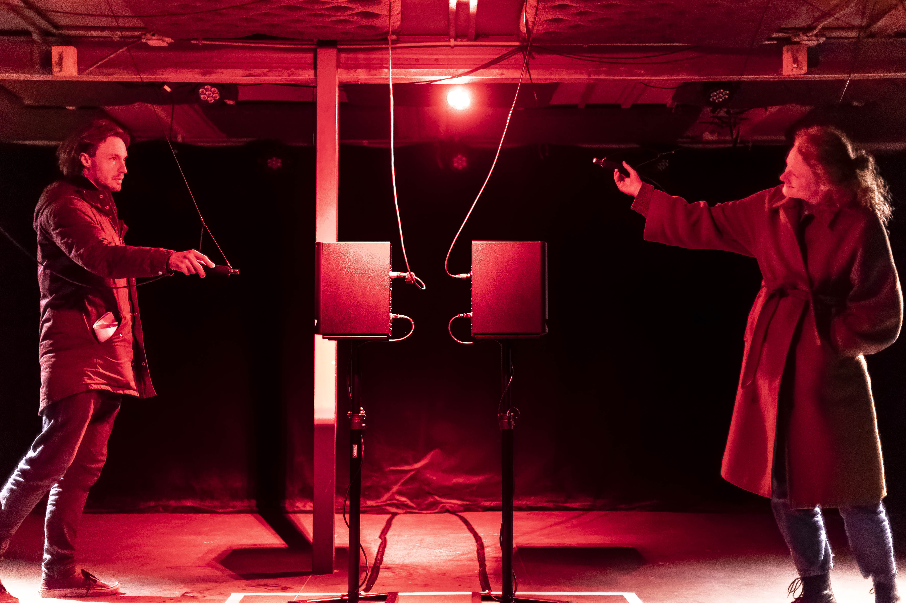

SIFL (Socially Interactive Feedback Loops) (2022)
SIFL is a collaborative interactive installation based on the principle of audio feedback.

photo © dorienhein
Two pairs of microphones and speakers are cross-connected to create a system for feedback. Two audience members are invited to play with the microphones to influence and disrupt the direct connections between the microphones and speakers. Their actions become interdependent through the feedback sound and if one person covers a microphone, the loop is disrupted and the feedback halts.
SIFL was presented at the Art Machine Festival 2022 and was created with Bram van Klink during the Recoding Workshop by Edwin van der Heide, with supports from Creative Coding Utrecht.